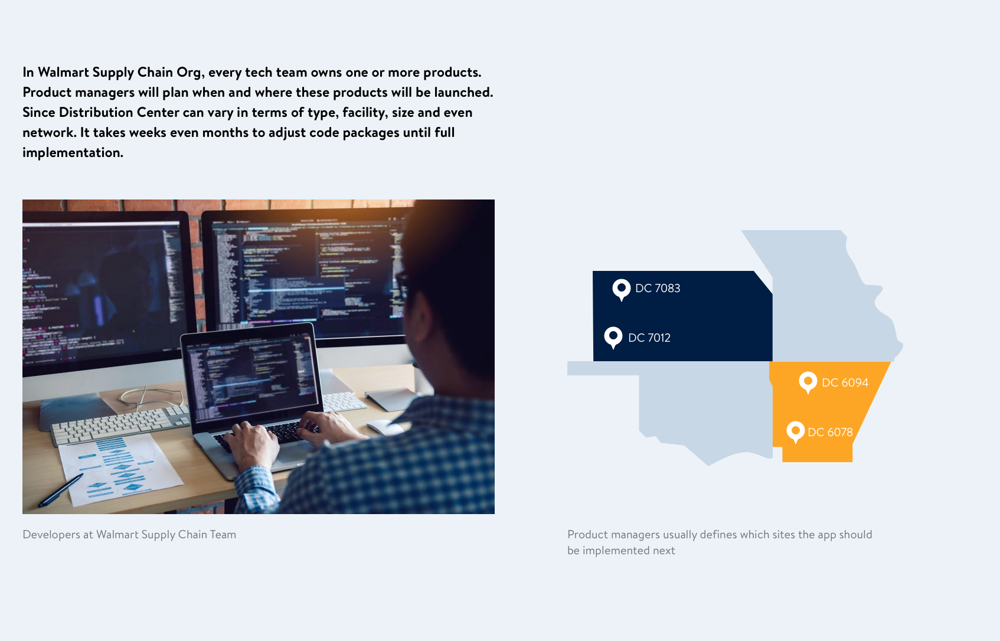
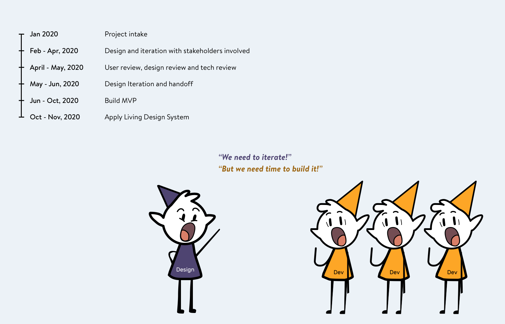
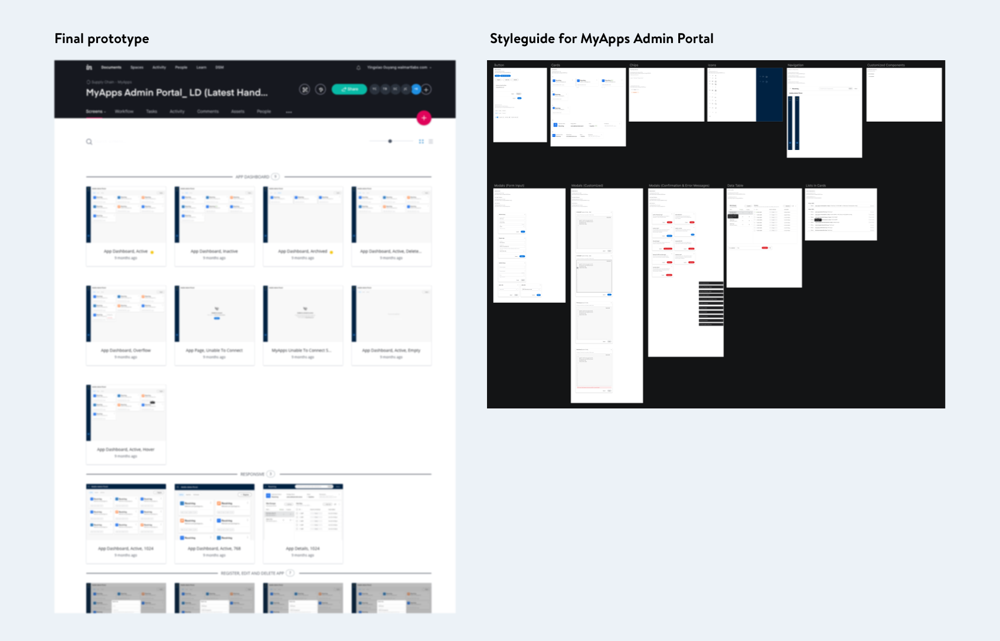
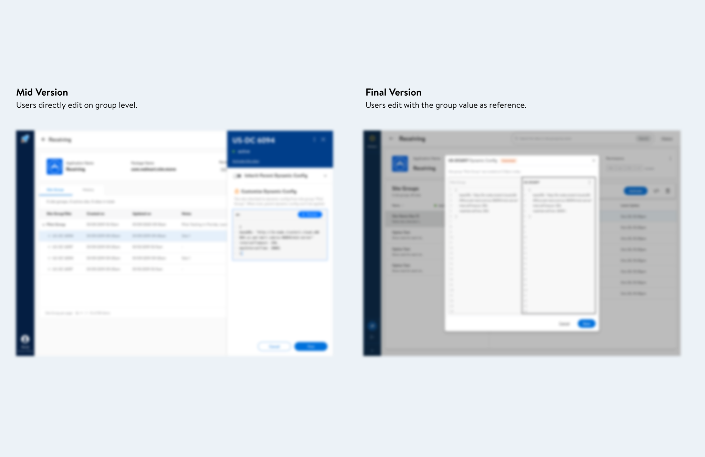
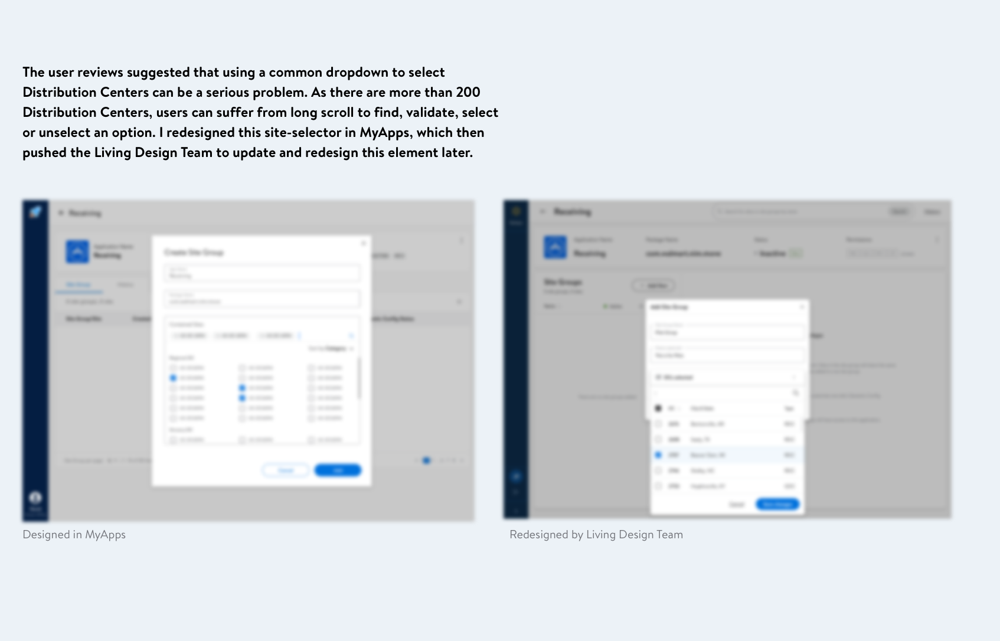

MyApps
Background
MyApps Admin Platform is designed for developers at Walmart Supply Chain org to speed up product launch. This is a cloud-based platform to manage code package variations grouped by distribution center sites. Before this platform, developers need to create a new code file for even a small code tweak needed for one warehouse. As time goes by, they lose track to history edits and find it hard to manage code files. With this platform, developers will have visibility into all launched versions and can reuse code packages for new distribution centers. After one year's work, this platform is being piloted and will become the go-to place for 40+ dev teams to configure and launch application to warehouses.

My role
I lead the end-to-end design design process in this project, following a double-diamond design process. I documented design request in intake meetings, understanding who are the users, what are the problems and what are the goals to achieve. Later I conducted several rounds of user reviews to help us understand what were the potential user problems through wireframes and low-fi prototypes. Then I marked the delivery time for every flow so that devs know when and what to expect. In the weekly UX meetings, I brought problems, concepts and user quotes to the table to discuss what should be the next steps.
Outcome
MyApps Web for warehouse associates is released to 200+ distribution centers with 20+ apps implemented. MyApps Admin Portal is being piloted in 2021 Q3. In the design phases, I imporved the user satisfaction level for 5 main use cases. Participants loved the code editor design and have high willingness to use the platform. My product manager told me that this project was delayed for 3 years and since I joined it is different. I shared the design process with the team and my manager commented:"Seriously great job on MyApps - you've pushed it a long way and made a complex process very simple".
Restricted by Non-disclosure Agreement, I am not able to display critical business information in my portfolio. To learn more about this project, please access Google Slides with passwords in my resume.
Learnings
Move fast and do things right
This MVP aims at validating the concept and collect feedback from end users. And I was required to deliver the first version within 3 months. There were a lot of pressure on me to quicky understand the tech terms and user behaviors. Let alone the org change where my previous manager was moved to another team. 1 month before handoff deadline, in one user testing session, I discovered a huge problem that can heavily impact user satisfaction rate.
To achieve a higher user satisfaction rate, I proposed some solutions and discussed if we could improve the experience within the given timeline with my design director. After winning his support, I scheduled meeting with tech lead and negotiated ways to earn some extra time to finish this iteration. As a result, we decided to handoff this prototype flows by flows. This makes sure that the backend team can start building, and I got the time needed to make design modification. When I valided the new concept with users, there were no users complaining about the problem anymore. And users got excited and loved the new concept. Despite all the pressure, what I learned is that doing things fast but also doing things right can push the project forward in the right direction.
Increase consistency with design systems, but push it forward
Right after the project started, Walmart design team announced that they would release an associate-facing Design System. But I wasn't sure what it would be like. I was informed by my design manager to use the previous design system for first handoff. We planned to create a new design task to achieve consistency when the new design system launched.
I realized that this may bring heavy workload to the development team. If they hard coded components, considering the workload, the design team would face huge obstacles asking them to change the appearance. To prevent this potential problem, I created a UI library specifically for MyApps Admin Portal. I listed out all the components and instances. This helped the backend team build reusable components knowing the looks would change in the future. When the new design system launched, I identified the components to modify and demoed to the devs through comparison. As the devs have already built reusable components using unified CSS style, they quickly agreed to make this modification.

Meanwhile, I didn't just wait for the Living Design team to told us what to build. When I tested with end users, I noticed there were some components users were complaning about, like the site selector dropdown. This pattern received negative feedback in several rounds of user testing and I decided to take a stab at it. I created a new way of selection and proposed to the managers. This concept was later proposed to the Living Design Team and eventually became a new component. The new site selector is now implemented in over 40 apps in Supply Chain area.
Reflection
This has been a great experience working directly with developers from brainstorming to development. The design team and tech team have been incredibly supportive. The whole team was always flexible and open-minded. Over-communication is never a problem in this team, more like a habit to pursue something better.
One thing I think can be improved in this project is the strategy to prioritize user feedback. I decided to optimize some flows based on my experience or personal insights. If I have the opportunity to redo the project, I would use more quantitive methods to communicate the importance.